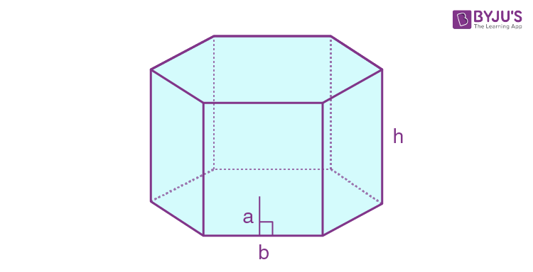
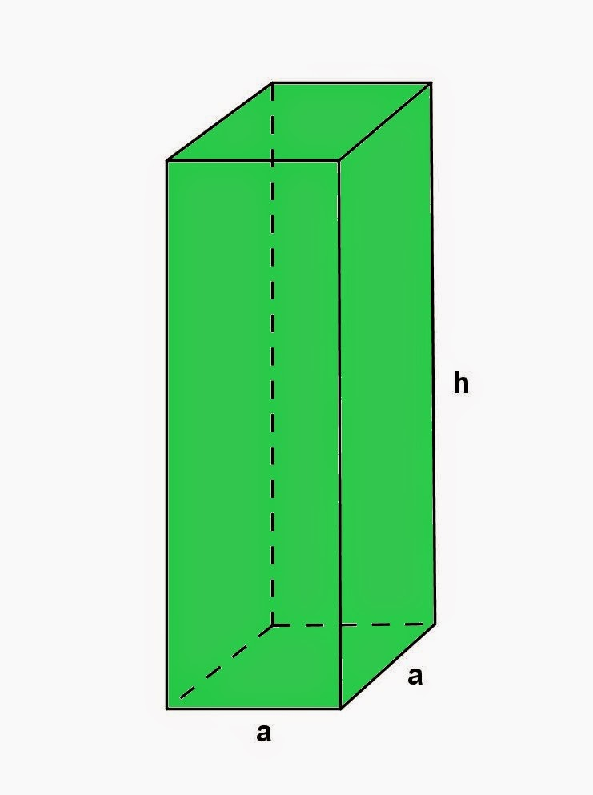
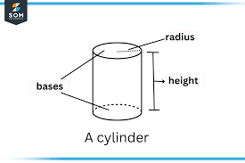
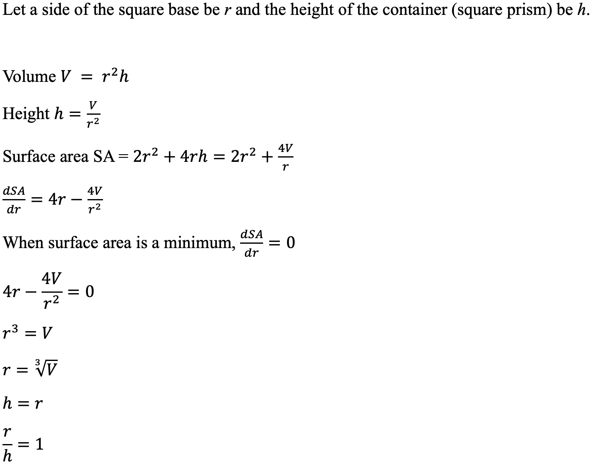
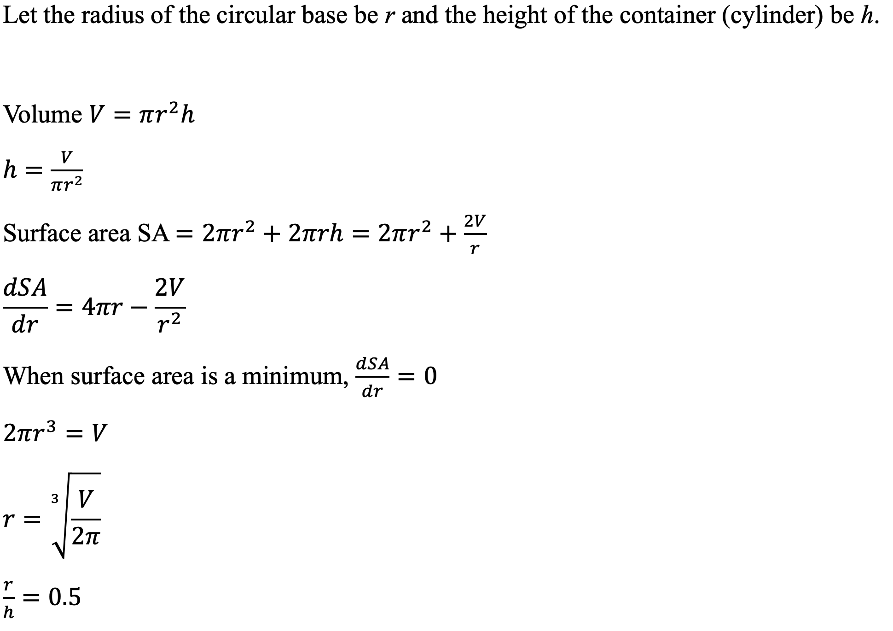
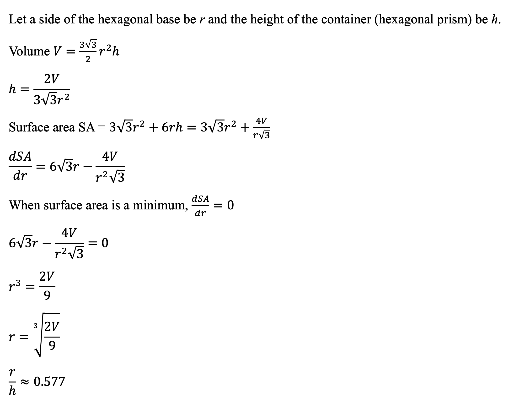

According to the United Nation's 17 Sustainable Development Goals, in order to fight climate change and environmental damage, society must "ensure sustainable production and consumption patterns." This extends to all parts of life, manifesting in the 3 "R"s - reduce, reuse and recycle. It is imperative for everyone to minimise our negative environmental footprint.
With this in mind, as well as growing inflation, a chocolatier wishes to minimise the cost of pushing out his products - chocolate sweets. The chocolatier wants to use the least amount of material to package his sweets (with each having a volume of 3cm^3). There are 3 container shapes available - all prisms, with different shaped bases. Check out the optimal dimensions of each type of container (for a given number of sweets) and the mathematical reasoning behind them!






Resources used: Claude AI, VS Code
Citations and AI declaration:
Byjus.com (n.d.). What is Hexagonal Prism?. Retrieved from https://byjus.com/maths/hexagonal-prism/
Math Principles (2014, August 7). Square Prism Problems. Retrieved from https://www.math-principles.com/2014/08/square-prism-problems.html
Story of Mathematics (n.d.). What Is a Cylinder?. Retrieved from https://www.storyofmathematics.com/glossary/cylinder/
United Nations (n.d.). The 17 Goals. Retrieved from https://sdgs.un.org/goals
W3Schools (n.d.). CSS object-fit Property. Retrieved from https://www.w3schools.com/css/css3_object-fit.asp
W3Schools (n.d.). HTML Images. Retrieved from https://www.w3schools.com/Html/html_images.asp
Claude AI was used to code and debug JavaScript code and CSS quickly - after a lot of confusion, and trial and error, because Yian does not know how to code.
Please copy this link for the list of prompts and answers: https://docs.google.com/document/d/1SViFg6eSMwjkQxPqMPDbvPB_zXIxd7X0AByhgxJqlQ8/edit?tab=t.0
Mathematical derivations are completely original.
Group members: Hou Yian, Kevin Tan, Jayden Chong.